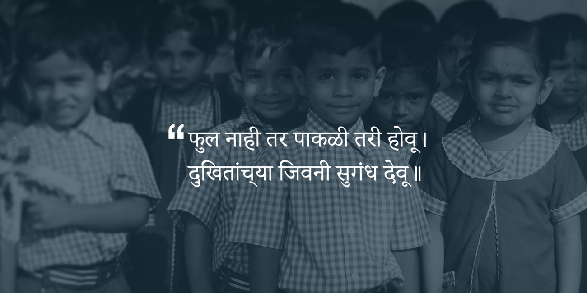
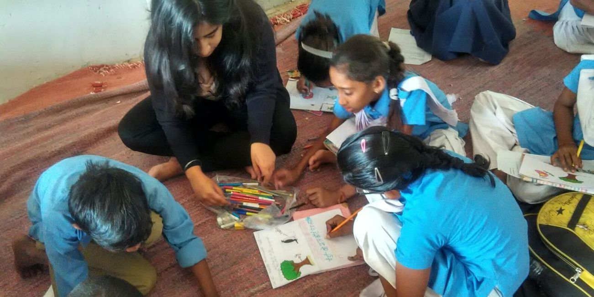
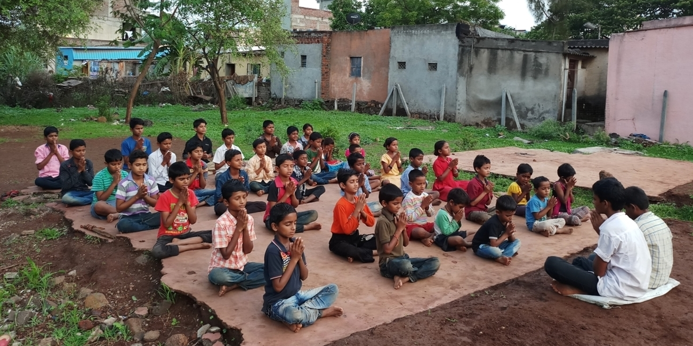
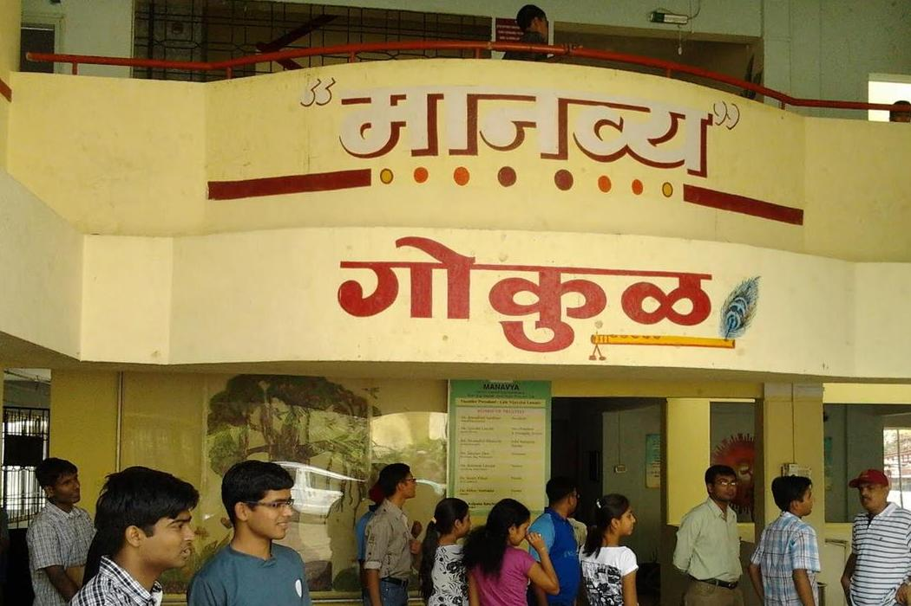

- 
- 
- 
Snehwan is taking care of around 25 children. While some of their fathers have committed suicide because of the drought, few could not afford education for them. All these kids live a healthy life, study and learn under Deshmane’s care. Besides academics, they are trained in music and art.

Manas and his leauge of superhero kids from Greenlands society wants to help Snehwan. They need to collect and deliver scrap newspaper (रद्दी) in and around Greenlands society. Help him and his gang to collect maximum amount they can. You can donate your own newspapers or tell us about people who can donate some.